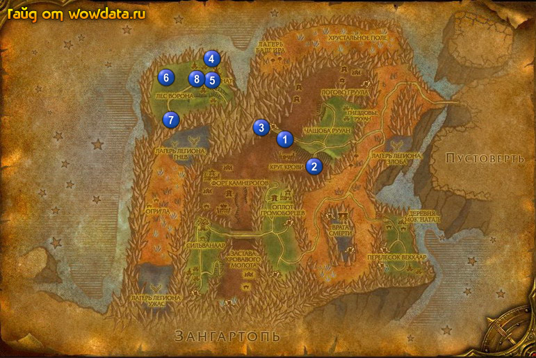

1) Идите по дороге на юго-восток от города, идите вниз и на запад к Круг Крови 1 (53, 41), найдите и поговорите с Барон Черногрив и закончите у него <Визит к барону>, начните <Прогулка в Гниющую лощину>.
2) Пойдите немного на югo-запад и бейте Большой землерой для <Прогулка в Гниющую лощину>, когда выполните вернитесь к Круг Крови и закончите квест, начните <Спи спокойно, гронн>.
3) Идите на восток 2 (59, 47), вы увидите Груллок, охранаяющего сумку, ипользуйте [Сонный порошок Черногрива] на него, и возьмите сумку пока он спит, потом быстро сматывайтесь. Если он проснется когда вы возмете сумку то используйте [Сонный порошок Черногрива] снова, иначе он убьет вас с 2 – 3 ударов.
4) Идите обратно к барону и закончите квест, начните <Ловушка!>.
5) Идите в город и в северной его части у Командир Гефус Камнестен закончите квест, начните <Горгром Драконоед>, затем около него начните <Резня в Камен'моке>.
6) бегите через Мост Драконьего черепа пока вы не увидите Дозорный Лунный Сумрак 3 (49, 36), закончите у него <Страж Драконьего черепа> и начните <За всем строит Длиннохвост>.
7) Идите в пещеру, найдите Драака Длиннохвостка и убейте, затем вернитесь к Дозорный Лунный Сумрак, закончите квест и начните <Встреча в Ковене Крыльев Тьмы>.
8) Идите обратно через пещеру по дороге, лезте на дерево 4 (40, 17) – левый подъем который и заберите первый тотем для <Шепот Бога-ворона>. Второй тотем находится на дереве черз дорогу (на втором, через мост). Третий будет внизу у озера с василисками, недалеко от подъемов на деревья. Четвертый между большим и маленьким шалашами 5 (40, 23). Если вы не любитель читать квесты, то знайте что чтобы открылся тотем нужно быть под двухминутным бафом который дается за любую птицу (не петов).
9) Пока вы делали предыдущий квест вы должны были найти [Сфера Гришны], который начинает <Тайна сферы>.
10) Идите на запад к 6 (31, 22) и бейте огров для <Резня в Камен'моке>, так же вы должны тут собрать 3 [Тотем гризли] для <Горгром Драконоед>, затем идите к Алтарь Горгрома 6 (30, 22), кликните по нему для установки ловушку. Придет 70 элитный моб и умрет на ловушке, используйте на него [Тотем гризли].
23) Идите на юг к Пещера Крыла Тьмы 7 (32, 34) и бейте Разведчик из Культа Змея ради 5 [Обрывки костюма] для <Встреча в Ковене Крыльев Тьмы>.
24) В пещере используйте [Сеть для ловли темных дракончиков] на Детеныш черного дракона для <Дракончики Культа Змея>. Вы пожете попрыгать по драконьим яйцам чтобы вылуплялись быстрее.
25) В пещере нужно поговорить с Колфис Черная Чешуя для <Встреча в Ковене Крыльев Тьмы>, чтобы это сделать используйте [Обрывки костюма], после чего в инвентаре появится чест, используйте го и вы станете дренеем на 3 минуты а орк станет дружелюбным.
26) Вернитесь по руне в Сильванаар, затем летите в Вечная роща.
27) Поговорите с Самия Недомолвка и закончите <Дракончики Культа Змея>, рядом с ней закончите <Встреча в Ковене Крыльев Тьмы>, начните <Да сгинет Макснар!>, тут же закончите <Тайна сферы> и начните <Древоствол должен знать!>.
28) Подойдите к Времион с другой стороны колодца и закончите <Шепот Бога-ворона>.
29) Пройдите на север к Командир Гефус Камнестен и закончите <Горгром Драконоед>, начните <Барон Черногрив желает вас лицезреть>, затем рядом с ним закончите <Резня в Камен'моке>.
30) Бегите назад к Лес Ворона и вы найдете там Древоствол 8 (37, 22), закончите <Древоствол должен знать!> и начните <Экзорцизм для деревьев>.
31) Снова идите в Пещера Крыла Тьмы на югo-западе, найдите там Макснар Бледная Пасть для <Да сгинет Макснар!> и убейте его.
32) Идите назад к Вечная роща и закончите <Да сгинет Макснар!>.
33) Снова идите вниз к Круг Крови 1 (53, 41) и закончите <Барон Черногрив желает вас лицезреть>, игнорируйте следующий квест <Резня в логове Груула>, если с вами не пойдут друзья.
34) Вернитесь в Вечная роща и идите по дороге в Пустоверть.